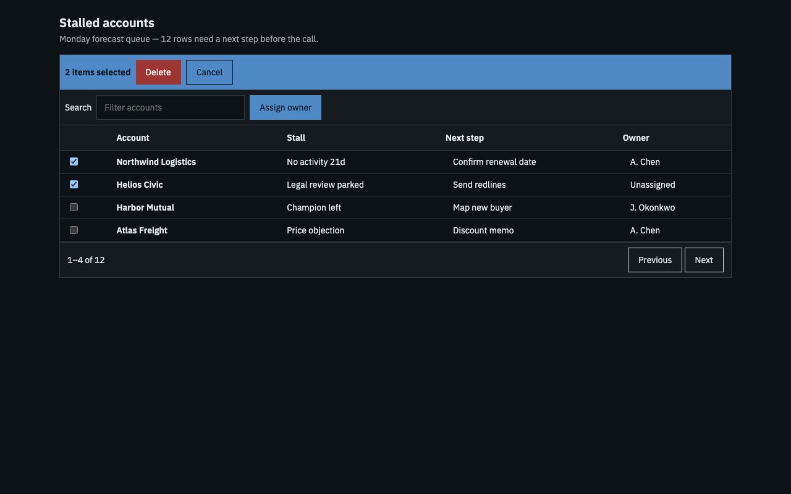
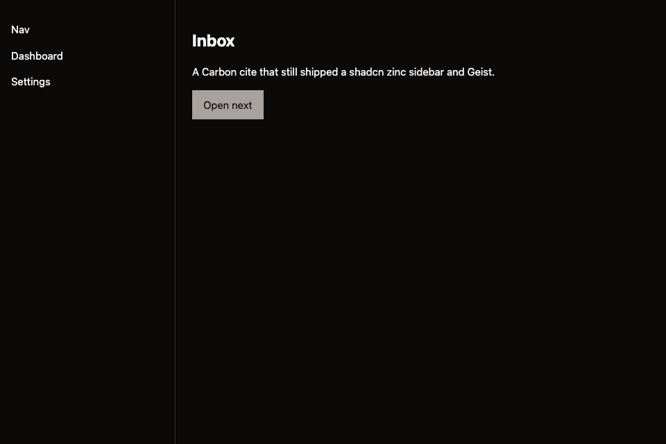

Shine
Your agent cited Carbon. It still shipped zinc.
V1 measured tokens, contrast, and axe — and printed PASS. V2 opens the DNA pack and fails the costume. One skill, Claude Code and Cursor.
Get the skillMIT · clone, symlink, node verify/doctor.mjs

V1 passed this
A Carbon datatable cite, a Geist sidebar, zinc chrome. Completeness was green. Likeness did not exist yet.

- V1
- Wipe the default palette. Measure the box. Fail off-token, fail axe, fail contrast axe declined to judge.
- V2
- Cite a real page, open its DNA pack, import the voice CSS, fail it when it still looks like zinc. Salesforce is a host, not a palette dump.
On the machine this afternoon
- Clone and symlink the skill into Claude Code and Cursor. One directory. Frontmatter is
name+descriptiononly — neverpaths:. - Cite before you draw.
node corpus/cite.mjs queue— open every file it lists andcorpus/packs/<id>/specimen.html. Naming an id you did not open is inventing. - Prove both halves.
node verify/measure.mjs page.html --cite carbon-datatable --shot out.pngthennode verify/critic.mjs page.html --cite carbon-datatable --lane internal. Likeness under 7 fails the build.
The gate is node verify/doctor.mjs. --ci is 45 checks; the session-start doctor also proves both surfaces’ skill, shine-ux, and hooks. A gate that is not in the doctor does not exist.
skill/ lines
SKILL.md 279
references/
adoption.md 158
ai-surfaces.md 160
anti-patterns.md 130
audit.md 95
brand.md 84
color-type.md 217
contracts.md 371
copy.md 148
corpus.md 109
dashboards.md 220
dataviz.md 126
diagnose.md 165
direction.md 53
ecosystem.md 154
foundations.md 193
imagegen.md 60
inspiration.md 53
interaction.md 43
kits.md 114
layout.md 29
motion.md 223
patterns.md 213
performance.md 121
salesforce.md 220
taste.md 224
techniques.md 90
templates.md 193
verification.md 280
voice.md 119
voices.md 38
wireframe.md 202
4,884